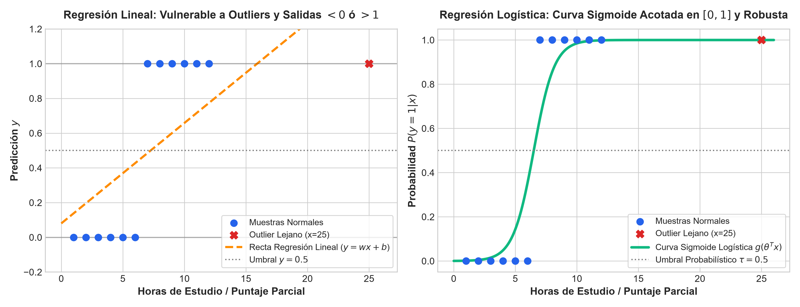
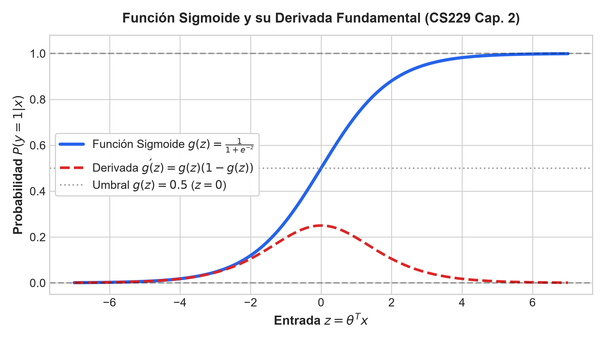
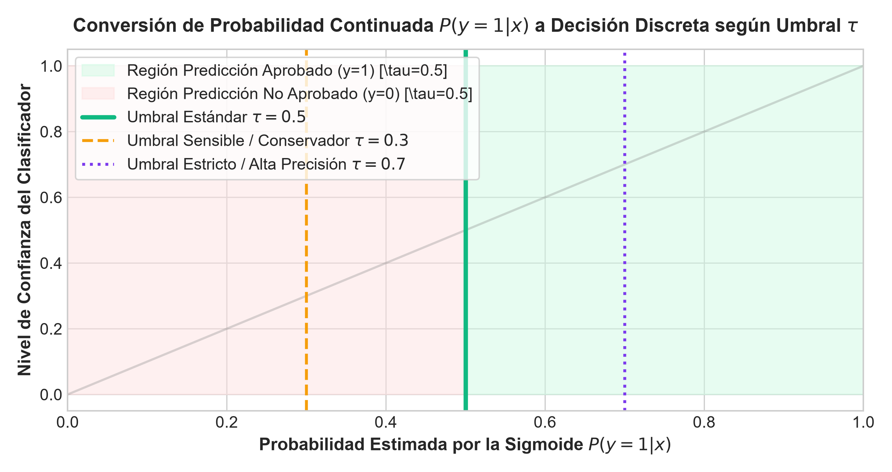
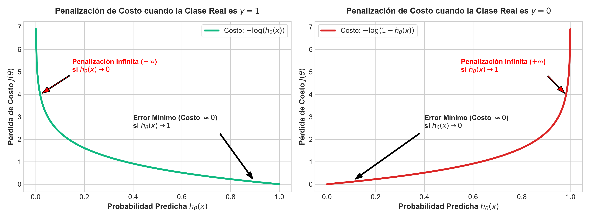
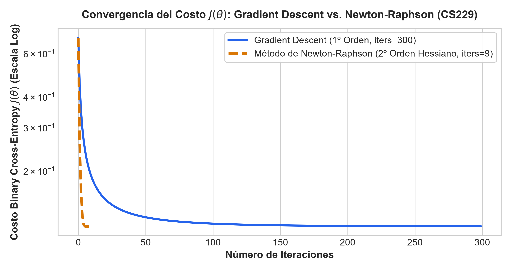
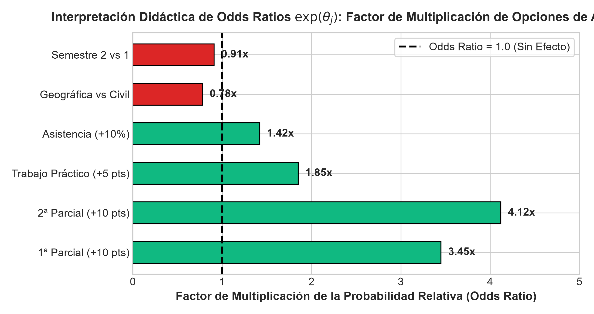
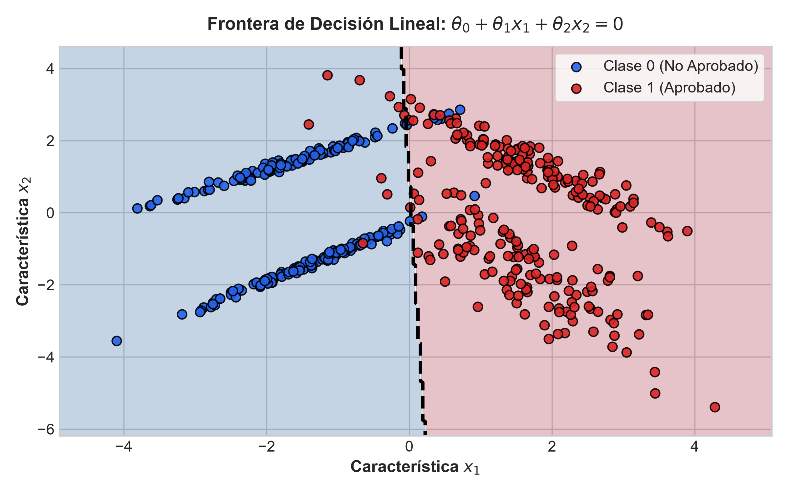
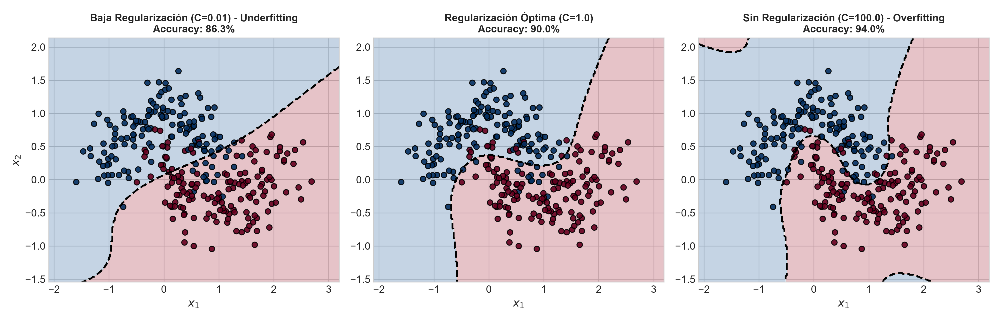
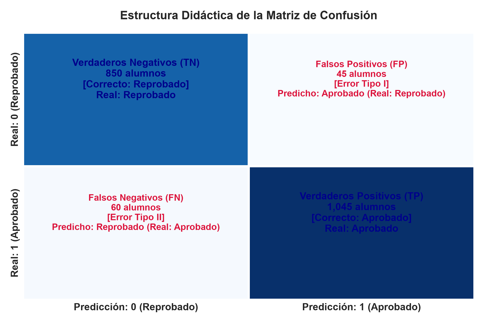
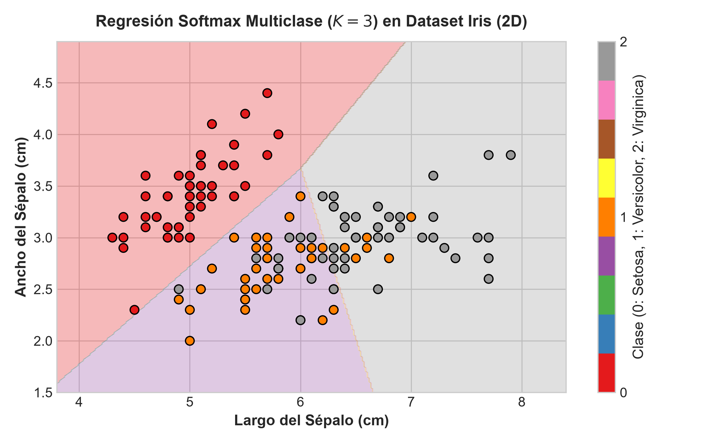

Semestre Séptimo - Ingeniería Electrónica

Comparativa: Vulnerabilidad de la Regresión Lineal ante Outliers (Izquierda) vs. Curva Sigmoide Logística Acotada $[0, 1]$ (Derecha)
En lugar de ajustar una recta continua, ajustamos una curva suave en forma de "S" (Sigmoide) que comprime cualquier valor real al rango probabilístico estricto $[0, 1]$.

Curva Sigmoide $g(z) = \frac{1}{1 + e^{-z}}$ (Azul) y su Derivada Fundamental $g'(z) = g(z)(1 - g(z))$ (Rojo Discontinuo)
Dado un puntaje z de combinación lineal $z = \theta^T x = \theta_0 + \theta_1 x_1 + \dots + \theta_n x_n$:
$$g(z) = \frac{1}{1 + e^{-z}}$$

División del espacio probabilístico continuo en decisiones discretas ($y=1$ vs $y=0$) según el umbral de corte $\tau$
El modelo devuelve una probabilidad continua $P(y=1|x) \in [0, 1]$. Para tomar una decisión física (Aprobado vs. No Aprobado), fijamos un Umbral de Corte $\tau$:
$$\hat{y} = \begin{cases} 1 & \text{si } P(y=1|x) \ge \tau \\ 0 & \text{si } P(y=1|x) < \tau \end{cases}$$

Curvas de Penalización Convexas: Costo cuando $y=1$ (Izquierda) vs. Costo cuando $y=0$ (Derecha)
En regresión logística, la combinación del MSE con la sigmoide produce una función de costo no convexa con múltiples mínimos locales donde el gradiente se atasca.
La probabilidad condicional para $y \in \{0, 1\}$ se escribe de forma compacta como:
$$p(y \mid x; \theta) = \left(h_\theta(x)\right)^y \left(1 - h_\theta(x)\right)^{1-y}$$
donde $h_\theta(x) = g(\theta^T x) = \frac{1}{1 + e^{-\theta^T x}}$.
Para $m$ muestras i.i.d., maximizamos la Log-Verosimilitud $l(\theta)$:
$$l(\theta) = \sum_{i=1}^m \left[ y^{(i)} \log h_\theta(x^{(i)}) + (1 - y^{(i)}) \log (1 - h_\theta(x^{(i)})) \right]$$
Minimizar la costo $J(\theta) = -\frac{1}{m} l(\theta)$ equivale exactamente a la función de verosimilitud MLE.
Derivando $J(\theta)$ con respecto al parámetro $\theta_j$:
$$\frac{\partial J(\theta)}{\partial \theta_j} = \frac{1}{m} \sum_{i=1}^m \left(h_\theta(x^{(i)}) - y^{(i)}\right) x_j^{(i)}$$
$$\nabla_\theta J(\theta) = \frac{1}{m} X^T \left(h_\theta(X) - y\right)$$
Regla de actualización con tasa de aprendizaje $\alpha > 0$:
$$\theta := \theta - \alpha \nabla_\theta J(\theta)$$

Comparación de Convergencia: Gradient Descent (Azul, 300 iters) vs. Método de Newton-Raphson (Naranja, <15 iters)
Aprovecha la curvatura local mediante la Matriz Hessiana $H \in \mathbb{R}^{(n+1) \times (n+1)}$:
$$\theta := \theta - H^{-1} \nabla_\theta J(\theta)$$
Matriz Hessiana Vectorizada:
$$H = \frac{1}{m} X^T D X, \quad D_{ii} = h_\theta(x^{(i)})(1 - h_\theta(x^{(i)}))$$
Alcanza la solución óptima en muy pocas iteraciones ($<15$ iters). Sin embargo, invertir $H$ requiere $\mathcal{O}(n^3)$ operaciones de cálculo matricial.

Factor de Multiplicación de las Opciones de Aprobación por cada incremento en los Atributos
A diferencia de la regresión lineal, $\theta_j$ representa el cambio en el Logit (Log-Odds) por unidad de incremento en $x_j$:
$$\log \left( \frac{P(y=1|x)}{1 - P(y=1|x)} \right) = \theta_0 + \theta_1 x_1 + \dots + \theta_n x_n$$
$$\text{Odds Ratio} = e^{\theta_j}$$

Hiperplano de Decisión Lineal $\theta_0 + \theta_1 x_1 + \theta_2 x_2 = 0$ separando Clase 0 y Clase 1
La frontera de decisión representa la región del espacio donde el modelo está en máxima incertidumbre ($P(y=1|x) = 0.5$):
$$h_\theta(x) = 0.5 \iff g(\theta^T x) = 0.5 \iff \theta^T x = 0$$
$$\theta_0 + \theta_1 x_1 + \theta_2 x_2 = 0 \implies x_2 = -\frac{\theta_1}{\theta_2} x_1 - \frac{\theta_0}{\theta_2}$$
El vector de parámetros $\theta = [\theta_1, \theta_2]^T$ es perpendicular (ortogonal) a la frontera de decisión.
Para conjuntos de datos no separables linealmente, mapeamos $x \in \mathbb{R}^n$ a un vector extendido $\phi(x) \in \mathbb{R}^d$ con términos polinomiales:
$$\phi(x) = [1, x_1, x_2, x_1^2, x_1 x_2, x_2^2, x_1^3, \dots]$$
El modelo sigue siendo lineal en los parámetros $\theta$, pero produce fronteras complejas en el espacio original.

Efecto del Parámetro $C$: Underfitting ($C=0.01$) vs. Óptimo ($C=1.0$) vs. Overfitting ($C=100.0$)
Penaliza la magnitud de los parámetros $\theta_j$ (excluyendo el bias $\theta_0$):
$$J_{reg}(\theta) = J(\theta) + \frac{\lambda}{2m} \sum_{j=1}^n \theta_j^2 = J(\theta) + \frac{1}{2mC} \sum_{j=1}^n \theta_j^2$$

Estructura Didáctica de Verdaderos Positivos, Verdaderos Negativos, Falsos Positivos y Falsos Negativos
$$\text{Accuracy} = \frac{TP + TN}{TP + TN + FP + FN}, \quad \text{Precision} = \frac{TP}{TP + FP}$$
$$\text{Recall} = \frac{TP}{TP + FN}, \quad F_1\text{-Score} = 2 \frac{\text{Prec} \cdot \text{Rec}}{\text{Prec} + \text{Rec}}$$

Fronteras Multiclase ($K=3$) generadas por la Función Softmax en el espacio 2D de Iris
Para $K > 2$ clases discontinuas $y \in \{1, \dots, K\}$, generalizamos la sigmoide a la función **Softmax**:
$$P(y = k \mid x; \Theta) = \frac{e^{\theta^{(k)T} x}}{\sum_{j=1}^K e^{\theta^{(j)T} x}}$$
Garantiza que la suma de probabilidades sobre las $K$ clases sea exactamente $1.0$.
Entrena $K$ clasificadores binarios independientes. Asigna la muestra a la clase con mayor probabilidad:
$$\hat{y} = \arg\max_{k \in \{1, \dots, K\}} h_{\theta^{(k)}}(x)$$
Comprime cualquier entrada continua a una probabilidad en $[0, 1]$, permitiendo tomar decisiones mediante el umbral $\tau$.
La pérdida BCE elimina falsos mínimos. Newton-Raphson logra convergencia cuadrática en pocos pasos con el Hessiano.
El hiperparámetro $C=1/\lambda$ controla el sobreajuste, mientras que los Odds Ratios $e^{\theta_j}$ cuantifican el impacto de cada variable.